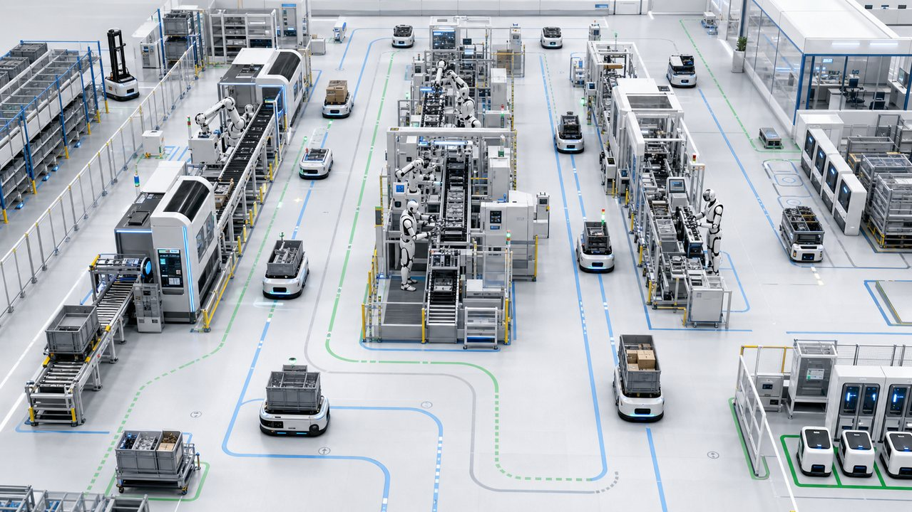

양품률
98.7%
목표 98.5%▲ 0.4%p
Integrated Control Center
공장, 물류, 설비 상태를 한 화면에서 모니터링
작업지시, 자재 흐름, Tray/Magazine 교체 미션을 통합 관리

| 작업지시번호 | 품목 | 계획수량 | 진행률 | 시작시간 | 완료예정 | 우선순위 |
|---|---|---|---|---|---|---|
| WO-250516-001 | JLT-PRO-001 | 10,000 | 72% | 05-16 06:00 | 05-16 14:00 | 높음 |
| WO-250516-002 | JLT-BAT-002 | 8,000 | 48% | 05-16 07:30 | 05-16 16:30 | 보통 |
| WO-250516-003 | JLT-MTR-003 | 6,000 | 18% | 05-16 08:00 | 05-16 17:30 | 높음 |
| WO-250516-004 | JLT-SEN-004 | 4,000 | 95% | 05-16 05:30 | 05-16 11:30 | 낮음 |
| WO-250516-005 | JLT-ASM-005 | 3,000 | 32% | 05-16 09:00 | 05-16 18:00 | 보통 |
| LOT | 자재ID | 입고 | 투입 | 사용 |
|---|---|---|---|---|
| LOT-260714-A01 | MAT-TRAY-001 | 120 | 96 | 80% |
| LOT-260714-A02 | MAT-TRAY-002 | 100 | 60 | 60% |
| LOT-260714-B01 | MAT-MAG-001 | 80 | 48 | 60% |
| LOT-260714-B02 | MAT-MAG-002 | 60 | 15 | 25% |
| 유형 | ID | 상태 | 보관위치 | 라인 |
|---|---|---|---|---|
| Tray | TRAY-023 | Empty | A동 1F-Rack 03 | Line A |
| Tray | TRAY-045 | In Use | Line A - M/C 15 | Line A |
| Tray | TRAY-067 | Full | A동 1F-OUT 02 | - |
| Magazine | MAG-010 | In Use | Line B - M/C 07 | Line B |
| 미션ID | 유형 | 대상 | 상태 | SLA |
|---|---|---|---|---|
| MIS-1287 | Tray 교체 | Line A - M/C 15 | 진행중 | 03:45 |
| MIS-1286 | Magazine 교체 | Line B - M/C 07 | 대기 | 05:12 |
| MIS-1285 | Tray 교체 | Line C - M/C 03 | 진행중 | 04:20 |
| MIS-1284 | Cart 보충 | Line B - Buffer | 완료 | 00:00 |
| 작업지시번호 | 품목 | 계획수량 | 진행률 | 시작시간 | 완료예정 | 우선순위 |
|---|---|---|---|---|---|---|
| WO-250516-001 | JLT-PRO-001 | 10,000 | 05-16 06:00 | 05-16 14:00 | 높음 | |
| WO-250516-002 | JLT-BAT-002 | 8,000 | 05-16 07:30 | 05-16 16:30 | 보통 | |
| WO-250516-003 | JLT-MTR-003 | 6,000 | 05-16 08:00 | 05-16 17:30 | 높음 | |
| WO-250516-004 | JLT-SEN-004 | 4,000 | 05-16 05:30 | 05-16 11:30 | 낮음 | |
| WO-250516-005 | JLT-ASM-005 | 3,000 | 05-16 09:00 | 05-16 18:00 | 보통 |
| LOT | 자재ID | 입고 | 투입 | 사용 현황 |
|---|---|---|---|---|
| LOT-250516-A01 | MAT-TRAY-001 | 120 | 96 | |
| LOT-250516-A02 | MAT-TRAY-002 | 100 | 60 | |
| LOT-250516-B01 | MAT-MAG-001 | 80 | 48 | |
| LOT-250516-B02 | MAT-MAG-002 | 60 | 15 | |
| LOT-250516-C01 | MAT-CART-001 | 40 | 5 |
| 자재유형 | ID(바코드) | 상태 | 보관위치 | 연결 라인 |
|---|---|---|---|---|
| Tray | TRAY-250516-023 | Empty | A동 1F-Rack 03 | Line A |
| Tray | TRAY-250516-045 | In Use | Line A - M/C 15 | Line A |
| Tray | TRAY-250516-067 | Full | A동 1F-OUT 02 | - |
| Magazine | MAG-250516-010 | In Use | Line B - M/C 07 | Line B |
| Cart | CART-250516-003 | Empty | A동 1F-AGV Zone | - |
| 미션ID | 유형 | 대상 | 상태 | SLA |
|---|---|---|---|---|
| MIS-250516-1287 | Tray 교체 | Line A - M/C 15 | 진행중 | 03:45 |
| MIS-250516-1286 | Magazine 교체 | Line B - M/C 07 | 대기 | 05:12 |
| MIS-250516-1285 | Tray 교체 | Line C - M/C 03 | 진행중 | 04:20 |
| MIS-250516-1284 | Cart 보충 | Line B - Buffer | 완료 | 00:00 |
| MIS-250516-1283 | Tray 회수 | Line B - OUT | 대기 | 06:30 |
생산 이력, 품질 지표, 설비 성능을 실시간 분석
| 작업지시 No. | 품목명 | 계획 수량 | 진행률 | ETA |
|---|
| 개체 ID | 유형 | 상태 | 배터리 | 위치 |
|---|
| 유형 | Humanoid |
|---|---|
| 현재 작업 | 조립 작업 |
| 센서 | LiDAR · 비전 · IMU |
| 이상 작업 | 없음 |
| 시간 | 개체 | 내용 | 결과 |
|---|---|---|---|
| 10:23:45 | AMR-05 | 경로 변경 결정 | 성공 |
| 10:22:13 | AMR-12 | 작업 순서 변경 | 성공 |
| 10:21:33 | AMR-01 | 속도 조절 | 성공 |
| 10:20:15 | HMD-01 | 작업 방법 변경 | 성공 |